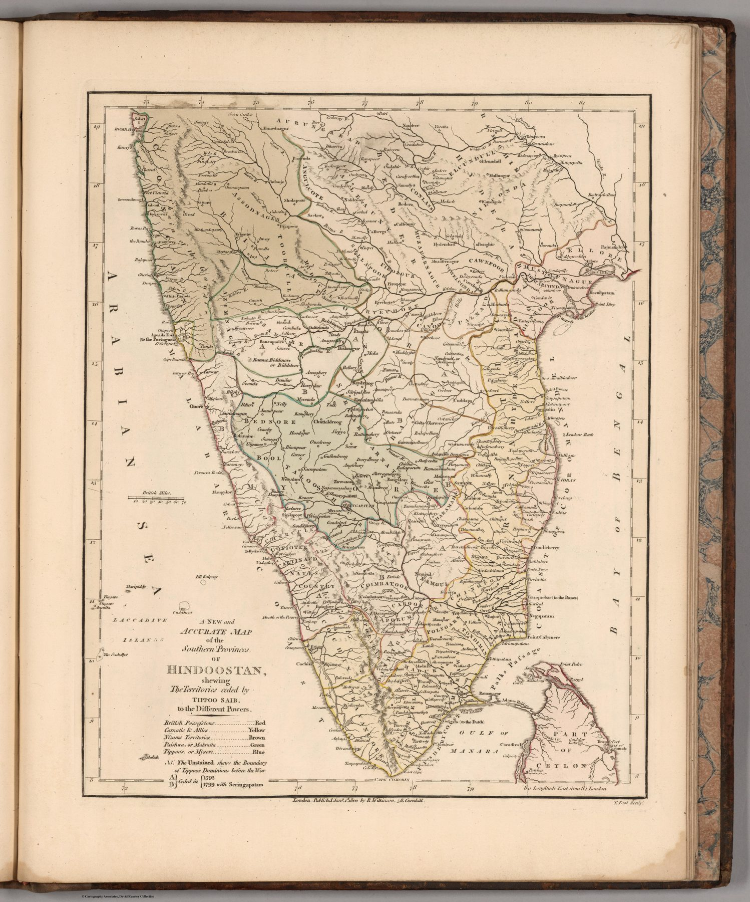

Plate date and atlas state
The map is dated 1800, while the catalogue record belongs to an 1808 issue of Wilkinson’s General Atlas. The atlas circulated in several closely related editions, and the survival of the earlier plate date within a later volume is typical of commercial map publishing.
Survey knowledge in compact form
Unlike Faden’s expansive two-sheet work, Wilkinson condenses the southern peninsula into a single hand-coloured atlas plate. The claim to be ‘new and accurate’ signals the new expectation created by survey: even a general atlas must present itself as current, measured and authoritative.
The gaze
Where Faden needed two sheets, Wilkinson needs one plate, and the reduction does its own work. At this size the south reads as a finished region; the routes and divisions that a campaign map displayed as working material are here simply the shape of the country. The phrase ‘new and accurate’ is the plate’s one acknowledgement of the survey behind it.
In the Deccan timeline
Haidar Ali (c. 1720–1782) · Srirangapatna (1610–1799) · Tipu’s Tiger (c. 1790) · Seringapatam, 1799 (4 May 1799) · Colin Mackenzie’s collection (1799–1821) · Mysore restored (30 June 1799)